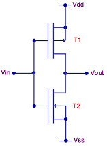

CMOS - Complementary Metal-Oxide-Semiconductor
The term
'Complementary Metal-Oxide-Semiconductor',
or simply
'CMOS', refers to
the device technology for designing and fabricating integrated
circuits that employ logic using both n- and p-channel
MOSFET's. CMOS is the other major
technology utilized in manufacturing digital IC's aside from
TTL, and is
now widely used in
microprocessors, memories, and digital ASIC's.
The input to a CMOS circuit is always to the gate of the input MOS
transistor,
which exhibits a very high resistance. This
high gate resistance
is due to the fact that the gate of a MOS transistor is isolated from
its channel by an oxide layer, which is a dielectric. As such, the current
flowing through a CMOS input is
virtually zero, and the device is operated mainly by the voltage applied
to the gate, which controls the conductivity of the device channel.
The low input currents required by a CMOS circuit results in
lower power
consumption, which is the major advantage of CMOS over TTL. In
fact, power consumption in a CMOS circuit occurs only when it is
switching between logic levels. This power dissipation during a
switching action is known as 'dynamic power'. In a typical CMOS
IC, output switching may take about a hundred picoseconds, and may occur
every 10 nanoseconds (or 100 millions times per second. Switching an
output from one logic level to another requires the charging and
discharging of various load capacitances, which dissipates power that is
proportional to these
capacitances
and the
frequency
of switching.
Figure 1
shows an example of a CMOS circuit - an
inverter
that employs a
p-channel and an n-channel MOS transistor. A logic '1' Vin voltage at
the input would make T1 (p-channel) turn off and T2 (n-channel) turn on,
pulling Vout to near Vss, or logic '0'. A logic '0' Vin voltage,
on the other hand, will make T1 turn on and T2 turn off, pulling Vout to
near Vdd, or logic '1'. Note that the p- and n-channel MOS
transistors in the circuit are
complementary, so they are always in
opposite states, i.e., for any given Vin level, one of them is 'on'
while the other is 'off'.
|
 |
|
Figure 1.
A CMOS Inverter
|
CMOS circuits were invented by
Frank Wanlass
of Fairchild Semiconductor in 1963, although the first CMOS
I.C.'s were not produced until 1968, this time at RCA. The original CMOS
devices consumed less power than TTL but ran slower too, so early
applications centered on circuits where battery consumption was more
important than speed of operation. Steadily CMOS technology has
improved, subsequently becoming the technology of choice for digital
circuits. Aside from low power consumption, CMOS circuits are also easy
and cheap to fabricate, allowing denser circuit integration than their
bipolar counterparts.
CMOS circuits are quite vulnerable to
ESD damage, mainly by
gate oxide punchthrough from high ESD voltages. Because of this issue,
modern CMOS IC's are now equipped with on-chip ESD protection circuits,
which reduce (but not totally eliminate) risks of ESD damage.
Proper handling and processing of CMOS IC's to prevent ESD damage are
also a 'must'.
In the 70's and 80's, CMOS IC's are run
using digital voltages that are compatible with
TTL so both can be
inter-operated with each other. By the 1990's, however, the need
for much lower power consumption for mobile devices has resulted in the
deployment of more and more CMOS devices that run on much lower power
supply voltages. The lower operating voltages also allowed the use of
thinner, higher-performance gate dielectrics in CMOS IC's.
See Also:
CMOS Parameters;
MOSFET's; Logic
Gates; TTL
HOME
Copyright
©
2005
www.EESemi.com.
All Rights Reserved.